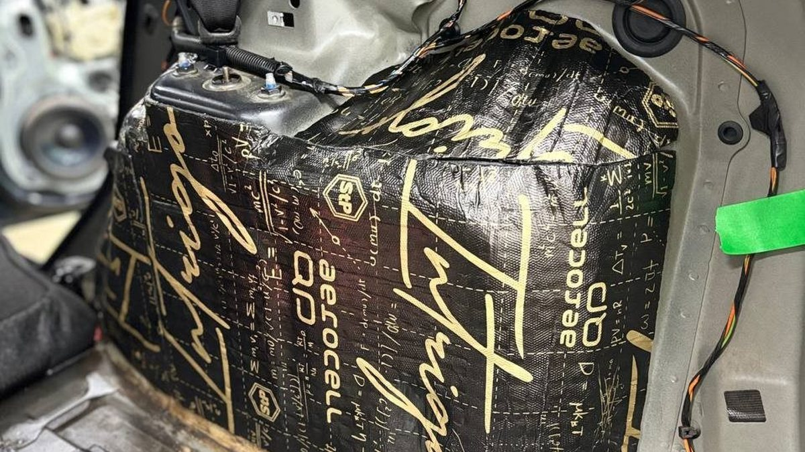

Зимой шум в салоне меняется за один день – в день, когда вы переобулись. Ещё вчера машина ехала мягко, а сегодня на Октябрьском мосту под колёсами сплошной хруст, будто едете по крупе. Камешек из-под реагентной каши щёлкает где-то у самого уха. На светофоре сзади подъезжает грузовик, и вы слышите, как с колёс у вас что-то отваливается и стучит по железу.
Это не поломка. Это колёсные арки, которые зимой работают как барабаны.
Летом их почти не слышно: сухой асфальт, летняя резина, мало мусора на дороге. С первым снегом всё меняется сразу. Дороги посыпают, в колее лежит смесь песка, соли и льда, и каждое колесо без остановки швыряет эту смесь в арку. Вы платите за это не деньгами, а нервами: к концу поездки по городу хочется просто тишины.

Путь одного камешка
Проследите, что происходит с гравием и наледью. Колесо подхватывает камень, песок, кусок ледяной каши и с силой бросает в арку. Если там стоит пластиковый подкрылок, удар приходится в него. Если подкрылка нет или он тонкий и сидит неплотно – прямо в металл.
Металл арки тонкий. От удара он звенит, вибрация уходит в кузов, и в салоне вы слышите щелчок с призвуком. Сотни таких щелчков в минуту – это и есть зимний «шорох», который не перекрывает даже печка на максимуме.
Шипованная резина добавляет свой слой. Шипы стучат по асфальту на каждом обороте колеса, и этот звук тоже приходит через арки. Чем ближе к салону арка, тем громче – поэтому задние пассажиры в седане и универсале часто слышат больше, чем водитель.
Наледь – отдельная история
В оттепель снег в арках подтаивает, ночью на морозе схватывается. К утру на подкрылке нарастает ледяная корка. Колесо цепляет её на поворотах, она трётся и стучит, а куски отрываются и бьют по металлу. Если вы замечали, что машина шумит сильнее после ночи у подъезда, чем после тёплой парковки, – это оно.
С наледью шумоизоляция не спорит, лёд всё равно намёрзнет. Но звук от его ударов становится глуше, если металл и подкрылок обработаны.

Что делают с арками
Работа идёт с двух сторон. Снаружи снимают подкрылки и обрабатывают металл арки и сами подкрылки – материал гасит удары и звон. Изнутри, со стороны салона и багажника, арку закрывают слоями, которые гасят вибрацию и поглощают то, что всё-таки прошло. Особенно это заметно на задних арках, которые у многих машин выходят прямо в багажник под тонкой обшивкой.
Шумоизоляция колёсных арок не делает езду на шипах беззвучной. Шины останутся шинами. Но меняется характер звука: вместо звонкой дроби – приглушённый фон, который мозг перестаёт замечать через несколько минут.
Важная оговорка: одни только арки не снимут гул от пола. Если низкий шум на трассе сильный, арки разумно делать вместе с полом, иначе звук просто найдёт соседнюю дорогу.
Что сделать этой зимой
Послушайте машину на чистом асфальте и на гравийной обочине при одной и той же скорости. Если на гравии в салоне начинается обстрел, а на асфальте почти тихо – слабое место именно в арках.
Загляните в арки после мойки. Если подкрылков нет, если они порваны или держатся на половине крепежа – начните с этого. Без подкрылка любая обработка металла будет работать под постоянным песком и реагентом.
Мы в Ярославле – студия «Автостиль», проспект Октября, 82б. Шумоизоляцию арок считаем индивидуально: смотрим машину, подкрылки и что уже стоит с завода. Про шумоизоляцию целиком – на странице про шумоизоляцию. Позвоните, расскажите про машину: +7 902 220-75-55.